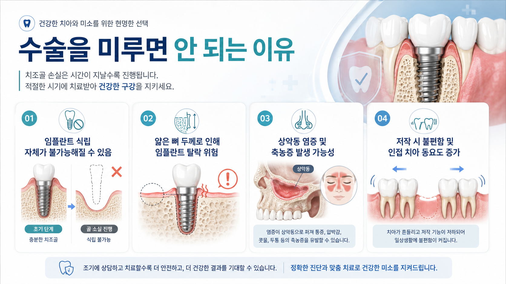
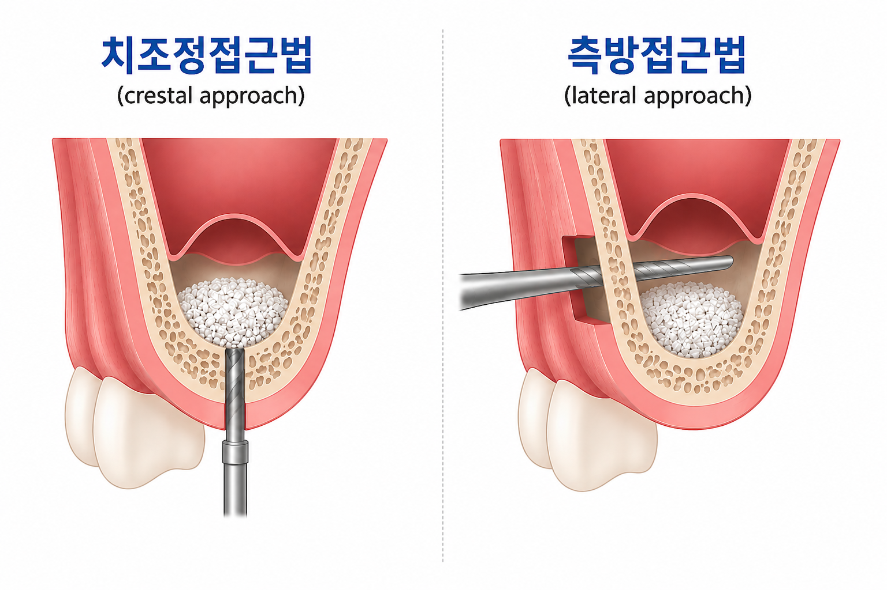
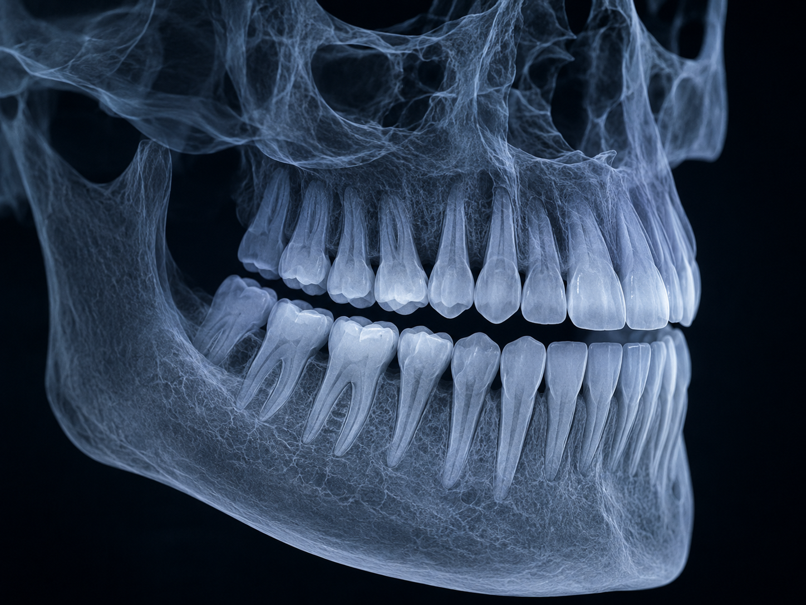
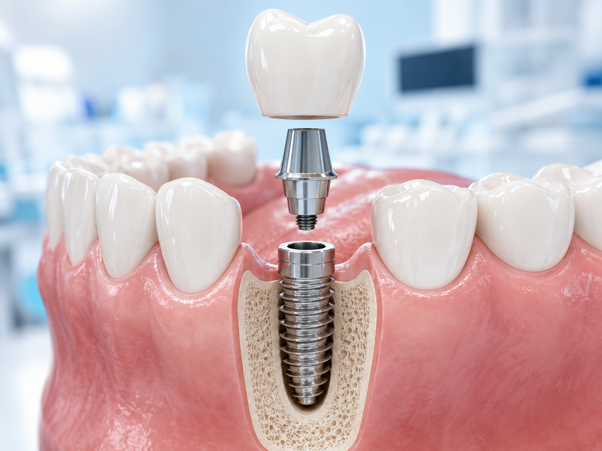
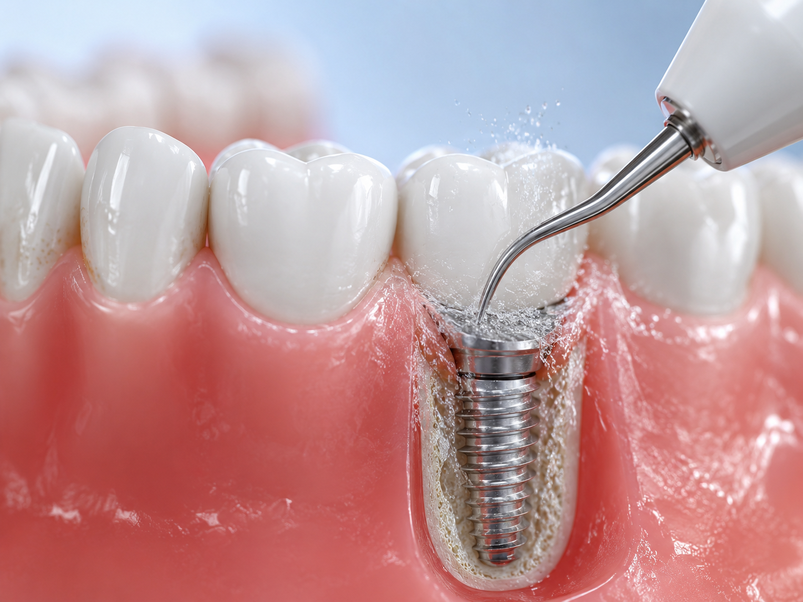

YONSEI LAKE DENTAL CLINIC
위턱 어금니 부위의 잇몸뼈가 부족한 경우, 임플란트가 안정적으로 자리 잡을 수 있도록 상악동 점막을 조심스럽게 들어 올리고 필요한 공간에 골이식재를 보강하는 치료입니다.
상악동은 위턱뼈 안쪽에 위치한 공기 주머니입니다. 위쪽 어금니를 오래 상실했거나 잇몸뼈가 흡수된 경우, 임플란트를 고정할 뼈 높이가 부족할 수 있습니다. 이때 상악동 점막을 조심스럽게 들어 올리고 골이식재를 채워 넣어 임플란트 식립을 위한 기반을 마련합니다.
상악동 거상술은 환자의 뼈 상태, 상악동 형태, 전신 건강 상태에 따라 치료 계획이 달라질 수 있으므로 3D CT를 통한 정밀 진단과 충분한 상담이 중요합니다.
상악동 거상술은 잇몸뼈가 부족한 정도와 상악동 형태에 따라 접근 방법이 달라질 수 있습니다. 일반적으로 비교적 보강 범위가 작은 경우에는 치조정 방향에서 접근하는 방법을, 더 넓은 골이식 공간이 필요한 경우에는 측면에 창을 만들어 접근하는 방법을 고려할 수 있습니다.

위 이미지는 이해를 돕기 위한 단순화된 설명 그림이며, 실제 치료 방법은 3D CT 진단과 의료진 상담 후 결정됩니다.
임플란트를 심을 자리에서 위쪽으로 접근해 상악동막을 조심스럽게 들어 올리는 방법입니다. 남아 있는 뼈 높이가 어느 정도 있고 보강 범위가 크지 않을 때 검토합니다.
위턱뼈 옆면에 작은 접근 창을 만들어 상악동막을 조심스럽게 들어 올리는 방법입니다. 뼈가 많이 부족하거나 넓은 골이식 공간이 필요할 때 검토합니다.
아래 항목에 해당한다면 위턱 임플란트 전 상악동 거상술 또는 골이식이 필요한지 확인해보는 것이 좋습니다.
상악동 거상술은 개인마다 필요한 범위와 난이도가 다를 수 있습니다. 연세레이크치과는 검사 결과를 바탕으로 무리한 치료보다 환자분에게 필요한 치료 계획을 우선으로 안내합니다.

잇몸뼈의 높이와 폭, 상악동 위치, 주변 구조를 입체적으로 확인합니다.

구강 상태와 전신 건강을 함께 고려해 필요한 치료 범위와 순서를 안내합니다.

임플란트를 오래 건강하게 사용할 수 있도록 정기 검진과 관리 방법을 안내합니다.

치아가 빠진 공간을 오래 방치하면 잇몸뼈가 점차 줄어들고 주변 치아 배열에도 영향을 줄 수 있습니다. 치료가 늦어질수록 필요한 검사와 치료 범위가 늘어날 수 있어 조기 상담이 도움이 됩니다.
검사 결과를 바탕으로 환자분에게 필요한 치료 방향을 충분히 설명드립니다.
상악동 위치와 잇몸뼈 상태를 입체적으로 확인해 치료 계획의 정확도를 높입니다.
치료 후에도 정기 검진과 관리 안내를 통해 임플란트의 안정적인 사용을 돕습니다.

잇몸뼈가 부족하다고 해서 모든 분에게 같은 치료가 필요한 것은 아닙니다. 현재 상태를 정확히 확인한 뒤 필요한 치료 방법을 안내해드립니다.
031-378-7522 전화 상담